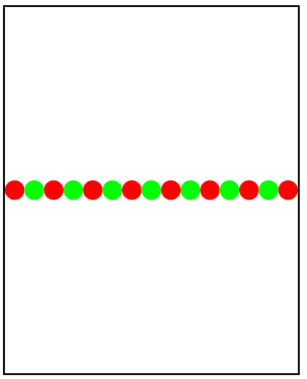

This graphics program should draw a caterpillar. A caterpillar has NUM_CIRCLES circles.
Every other circle is a different color, the even circles are red, and the odd circles
are green (by even we mean when i is an even number). Use a for loop to draw the caterpillar,
centered vertically in the screen. Also, be sure that the caterpillar is still drawn across the
whole canvas even if the value of NUM_CIRCLES is changed.
這個圖形程序應吸取毛蟲。毛毛蟲有詩壇圈數。隔圈是一個不同的顏色，甚至圓圈是紅色的，和一些奇怪的圓圈是綠色的（即使按我們的意思是，
當我是偶數）。使用for循環來畫毛毛蟲，在屏幕垂直居中。此外，請確保毛蟲至今仍然在整個畫布繪製即使圈數的值被改變。
// This graphics program should draw a caterpillar. A caterpillar has NUM_CIRCLES
// circles. Every other circle is a different color, the even circles are red, and
// the odd circles are green. Use a for loop to draw the caterpillar, centered
// vertically in the screen.
//這個圖形程序應吸取毛蟲。毛毛蟲有圈數
//圈。隔圈是一種不同的顏色，則即使圓圈是紅色的，並且
//奇圈是綠色的。使用為循環來繪製毛蟲，居中
//垂直屏幕。
